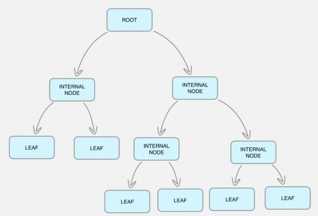
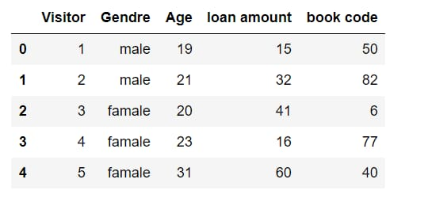
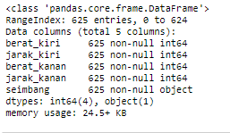
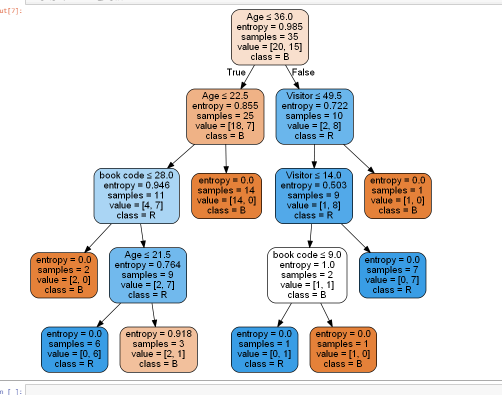

Material
Decision Trees – How to Implement Decision Tree Algorithm Code¶
Definisi Decision Tree¶

Decision Tree merupakan salah satu metode klasifikasi pada Data Mining. Klasifikasi adalah proses menemukan kumpulan pola atau fungsi-fungsi yang mendeskripsikan dan memisahkan kelas data satu dengan lainnya, untuk dapat digunakan untuk memprediksi data yang belum memiliki kelas data tertentu (Jianwei Han, 2001).
Decision Tree adalah sebuah struktur pohon, dimana setiap node pohon merepresentasikan atribut yang telah diuji, setiap cabang merupakan suatu pembagian hasil uji, dan node daun (leaf) merepresentasikan kelompok kelas tertentu. Level node teratas dari sebuah Decision Tree adalah node akar (root) yang biasanya berupa atribut yang paling memiliki pengaruh terbesar pada suatu kelas tertentu. Pada umumnya Decision Tree melakukan strategi pencarian secara top-down untuk solusinya. Pada proses mengklasifikasi data yang tidak diketahui, nilai atribut akan diuji dengan cara melacak jalur dari node akar (root) sampai node akhir (daun) dan kemudian akan diprediksi kelas yang dimiliki oleh suatu data baru tertentu.
Untuk setiap atribut dalam dataset, algoritma pohon keputusan membentuk sebuah simpul, di mana atribut yang paling penting ditempatkan pada simpul akar. Untuk evaluasi, kita mulai dari simpul akar dan berjalan menuruni pohon dengan mengikuti simpul yang sesuai yang memenuhi kondisi atau "keputusan" kita. Proses ini berlanjut hingga simpul daun tercapai, yang berisi prediksi atau hasil dari pohon keputusan.
Ada beberapa keuntungan menggunakan treess keputusan untuk analisis prediksi:
- Pohon keputusan dapat digunakan untuk memprediksi nilai kontinu dan diskrit yaitu mereka bekerja dengan baik untuk tugas-tugas regresi dan klasifikasi.
- Mereka membutuhkan usaha yang relatif lebih sedikit untuk melatih algoritma.
- Mereka dapat digunakan untuk mengklasifikasikan data yang dapat dipisahkan secara non-linear.
- Mereka sangat cepat dan efisien dibandingkan dengan KNN dan algoritma klasifikasi lainnya.
Struktur Pohon Keputusan¶
Pohon keputusan memiliki tiga bagian utama: simpul akar, simpul daun dan cabang. Simpul akar adalah titik awal dari pohon, dan simpul akar dan daun mengandung pertanyaan atau kriteria yang harus dijawab. Cabang adalah panah yang menghubungkan node, menunjukkan aliran dari pertanyaan ke jawaban. Setiap node biasanya memiliki dua atau lebih node yang memanjang darinya. Misalnya, jika pertanyaan di simpul pertama membutuhkan jawaban "ya" atau "tidak", akan ada satu simpul daun untuk respons "ya", dan simpul lain untuk "tidak."
Rumus untuk mencari dan membuat Pohon Keputusan (Decision Tree)¶
Perhitungan Gain

Keterangan:
S : himpunan
A : atribut
n : jumlah partisi atribut A
| Si | : jumlah kasus pada partisi ke-i
| S | : jumlah kasus dalam S
Menghitung Nilai Entropy

Keterangan: S : himpunan kasus A : fitur n : jumlah partisi S pi : proporsi dari Si terhadap S
Decision Tree menggunakan dataset¶
Decision Tree yang dimodelkan akan membandingkan metrik catatan baru dengan catatan sebelumnya (data pelatihan) yang dengan benar mengklasifikasikan arah ujung skala saldo.
Paket python digunakan
- NumPy
NumPy adalah modul Numeric Python. Ini menyediakan fungsi matematika yang cepat.
Numpy menyediakan struktur data yang kuat untuk komputasi array & matriks multi dimensi yang efisien.
Kami menggunakan numpy untuk membaca file data menjadi array numpy dan manipulasi data.
- Pandas
Menyediakan DataFrame Object untuk manipulasi data
Menyediakan membaca & menulis data dengan file yang berbeda.
DataFrames dapat menampung berbagai tipe data array multidimensi.
- Scikit-Learn
Ini adalah perpustakaan pembelajaran mesin. Ini mencakup berbagai algoritma pembelajaran mesin.
Importing Python Machine Learning Libraries
Bagian ini melibatkan mengimpor semua perpustakaan yang akan kita gunakan. Kami mengimpor modul numpy dan sklearn train_test_split, DecisionTreeClassifier & akurasi_score.
import pandas as pd from sklearn.tree import DecisionTreeClassifier from sklearn.model_selection import train_test_split from sklearn import metrics from sklearn.metrics import accuracy_score import seaborn as sns from sklearn.tree import export_graphviz from sklearn.externals.six import StringIO from IPython.display import Image from sklearn.tree import export_graphviz import pydotplus import numpy as np
Impor Data Untuk mengimpor data dan memanipulasinya, kita akan menggunakan kerangka data panda. Pertama-tama, kita perlu mengunduh dataset. Anda dapat mengunduh dataset dari sini. Semua nilai data dipisahkan oleh koma. Setelah mengunduh file data, kami akan menggunakan metode Pandas read_csv () untuk mengimpor data ke dalam kerangka data panda. Karena data kami dipisahkan dengan koma "," dan tidak ada tajuk dalam data kami, jadi kami akan menempatkan nilai parameter tajuk "Tidak ada" dan nilai parameter sepsebagai ",".
data = pd.read_csv('perpustakaan.csv') data.head()

Periksa beberapa informasi tentang kumpulan data
data.info()

zero_not_accepted = ['Visitor','Age','loan amount','book code'] # for col in zero_not_accepted: # for i in data[col]: # if i==0: # colSum = sum(data[col]) # meanCol=colSum/len(data[col]) # data[col]=meanCol for col in zero_not_accepted: data[col]= data[col].replace(0,np.NaN) mean = int(data[col].mean(skipna=True)) data[col] = data[col].replace(np.NaN,mean)
Train test split :¶
X = data.iloc[:,0:3] y = data.iloc[:,3] #Pregnancies Glucose BloodPressure SkinThickness Insulin BMI DiabetesPedigreeFunction Age #build model & train data X = data[['Visitor','Age','loan amount','book code']] y = data['Gendre'] #split data X_train, X_test, y_train, y_test = train_test_split(X, y, test_size = 0.3, random_state=0)
Sekarang kita cocok dengan algoritma pohon keputusan pada data pelatihan, memprediksi label untuk dataset validasi dan mencetak akurasi model menggunakan berbagai parameter.
clf = DecisionTreeClassifier(criterion="entropy", max_depth=4) clf = clf.fit(X_train,y_train) y_pred = clf.predict(X_test)
Visualisasi dari grafik keputusan:
feature_cols = ['Visitor','Age','loan amount','book code'] dot_data = StringIO() export_graphviz(clf, out_file=dot_data, filled=True, rounded=True, special_characters=True,feature_names = feature_cols,class_names=['B','R','L']) graph = pydotplus.graph_from_dot_data(dot_data.getvalue()) graph.write_png('a.png') Image(graph.create_png())

References¶
[[1] http://dataaspirant.com/2017/02/01/decision-tree-algorithm-python-with-scikit-learn/
[[2] https://machinelearningmastery.com/implement-decision-tree-algorithm-scratch-python/